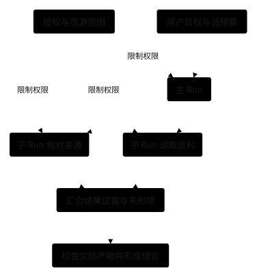
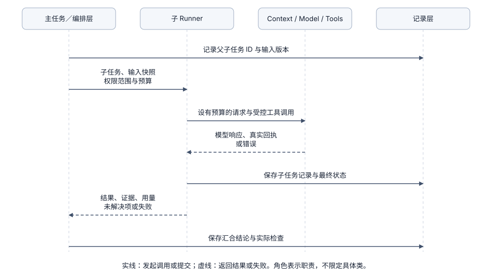

Orchestration：安排多个 Agent 分工与协作
1. 问题起点：什么时候需要多 Agent 协作，核心要管住什么？
当单个任务包含大量独立的资料搜索或专项核对时，如果全部塞进同一个 Agent 循环，中间探索过程会迅速撑爆主上下文。此时可以让主 Agent 负责整体目标与整合，将专项检索或证据核对委派给独立的子 Agent。
多 Agent 协作：任务分发、子任务运行与结果汇合（未来方案，当前仍是单 Agent 基线）

- 角色提示词不等于系统隔离：给模型起名叫“只读评审员”只影响提示词，程序必须显式为每个子任务配置独立的运行 ID、工具子集、Token 预算与 Policy 权限。
- 区分三类不同的隔离：上下文隔离（不共享全部历史消息）、工作区文件隔离（不互相覆盖文件）与操作系统沙箱隔离是三个独立维度，需分别落实。
2. 模块协作：编排层与各核心模块如何配合？
- 任务分发（Orchestration → 子 Runner）：编排层为子任务指定输入快照、完成标准、预算上限与允许的工具集；子 Runner 使用各自的 Context，经 Model、Tools 和 Policy 完成实际调用。
- 关系记录与结果汇合（State & Quality）：State 保存父子 Run 的对应关系、交接消息与执行结果；编排层核对证据后汇合，必要时交由 Quality 检查产物。
- 权限与超时边界：子任务的权限绝不能超出父任务的授权范围；且必须明确区分“子任务部分完成”“等待超时”与“已确认取消”（父任务等待超时不代表后台子进程已经停止）。

3. 核心方案对比：5 种多 Agent 编排模式
以下 5 种模式分别解决不同层面的协作需求，可按需选用（当前均未实现，阶段 3 为单 Runner）：
A. Agent 作为工具（Subagent as a Tool）
- 做法：主 Agent 通过工具调用提交一个边界明确的子任务，子 Agent 在独立上下文与受限工具集中运行，返回结构化结论与证据，主 Agent 继续负责整合与最终回复。
- 适用场景：资料检索、长文档分析与独立代码评审（建议起步时将调用深度限制为 1 层）。
B. 交互责任转交（Handoff）
- 做法：当前 Agent 将会话控制权直接移交给另一个领域专家 Agent，后续用户输入直接路由给新接手的执行者。
- 适用场景：客服路由、多领域专家分流；需明确转交哪些历史消息、任务状态与权限。
C. 显式工作流图（Graph 与并行汇合）
- 做法：由程序用节点（普通函数或 Agent）、条件边和合并函数（Reducer）固定任务流转与并行汇合规则。
- 适用场景：阶段划分稳定、依赖关系明确的业务流水线；注意多数投票不能替代确定性的结果检查。
D. 持续子会话与异步邮箱（Mailbox）
- 做法：子 Agent 保有持久 ID 与状态，通过带序号、发送者与唤醒标记的消息队列接收后续澄清或新指令。
- 适用场景：长周期异步协作；需防止普通进度通知无限触发模型互发消息造成死循环。
E. 共享任务板与队列（Task Board）
- 做法：多个 Worker 根据依赖关系认领任务并持有租约（Lease），完成后提交结果并更新任务版本号。
- 适用场景：大批量可并行处理的独立子任务；核心需解决并发争抢、租约超时与结果冲突。
| 编排方案 | 谁对最终结果负责 | 需要保存的关键状态 | 主要实现代价 |
|---|---|---|---|
| Agent 作为工具 | 主 Agent | 子任务契约、输入快照与返回证据 | 额外调用开销与交接信息核验 |
| Handoff 转交 | 接手的执行者 | 当前会话归属与转交上下文 | 后续路由与权限边界迁移 |
| 显式 Graph | 应用工作流 | 节点状态、边条件与合并规则 | 状态 Schema 与断点恢复维护 |
| 异步邮箱 | 按任务约定 | Agent ID、消息序号与唤醒条件 | 消息去重、乱序处理与防空转 |
| 共享任务板 | 调度器与任务拥有者 | 任务租约、版本号与依赖图 | 并发锁竞争、超时重派与冲突解决 |
4. 开源与工业界编排实践
- OpenAI Agents SDK（官方文档）：编排与 Handoff 清晰区分了“Manager 调用子 Agent 工具”和“Handoff 转移对话控制权”两种模式。
- Deep Agents（源码核对）：subagents.py 为普通子任务构造独立任务输入并将输出转为主 Agent 的工具回执，同时将独立窗口与继承父历史的 fork 路径明确分开。
- Claude Code（官方文档）：子 Agent 说明采用独立上下文窗口与受限工具集隔离中间探索过程，只将最终总结返回主会话。
- AgentScope Java（官方文档）：子 Agent 设计区分工作区模式、同步等待与后台任务，并将“等待超时”“取消执行”和“任务失败”分别建模。
- LangGraph（官方文档）：Graph API 用显式状态、节点、边与 Reducer 函数管理多节点合并，避免靠拼接多段自然语言回答充当状态合并。
5. 子任务交接契约如何设计？
为了避免子任务“猜要求”或主任务“盲信结论”，子任务的输入、预算与返回结果应采用显式结构化契约：
task = {id, parent_run_id, revision, objective, constraints, input_refs}
limits = {deadline, model_calls, token_budget, max_depth}
result = {status, findings, evidence_refs, artifact_refs, checks, uncertainties}
- 权限取交集：子任务仅能执行“父任务权限 ∩ 子任务自身配置”均允许的操作，绝不因切换角色而放大权限。
- 预算统一扣减：子任务的模型调用与 Token 消耗计入总任务预算，并行派发前应先预留额度。
- 取消需执行端确认：父任务取消或超时后，需向子任务传播取消信号并等待执行端确认，结果未知时如实记录，不伪造失败回执。
6. 并发执行时如何隔离共享工作区？
- 只读任务共享快照：多个只读检索或评审子任务可安全读取同一份固定文件快照。
- 写任务按资源或 Worktree 隔离：并发修改代码时可使用独立的 Git worktree，待各自完成后在汇合阶段合并并运行整体验收测试（注意 Git worktree 仅隔离工作树文件，不提供操作系统级沙箱隔离）。
7. 外层任务调度与长周期等待
- 外层触发器：定时任务（Cron）、外部回调（Webhook）与持久化工作流负责在特定事件发生时启动或唤醒一次 Run，Run 内部依然运行标准的 Agent Loop。
- 挂起与按事件唤醒：需要等待外部审批或长耗时构建时，应保存外部任务 ID、等待条件与截止时间后释放执行进程；待外部事件到达并校验版本与去重后，再唤醒继续执行，避免在循环里空转轮询调用模型。
8. 本项目当前实现与未实现范围
9. 期望达到的效果（后续子任务委派练习）
在后续阶段尝试引入多 Agent 时，建议先从最简单的“只读 review_document 子 Agent 工具（最大深度为 1）”起步验证。
期望达到的效果：
- 中间探索不污染主窗口：子 Agent 的多步文件搜索过程留在子上下文中，主 Agent 仅接收结构化问题清单、证据位置与不确定项。
- 权限与深度严格受控：只读子 Agent 无法调用任何写文件工具，也无法递归继续创建下一层子任务。
- 异常与超时清晰可辨：当输入缺失必要信息、子任务超时或父任务取消时，主流程能收到明确的状态区分，不会盲目把残缺输出当成审查通过。
- 收益与成本可量化对比：在相同任务集上对比单 Agent 与子任务委派版本，能清楚给出主窗口 Token 降幅、总调用成本与最终任务准确率的变化。